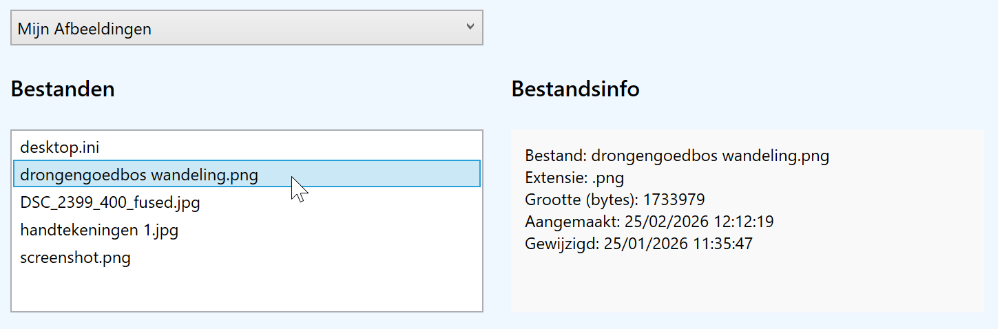

Doel: exception handling toevoegen aan bestaande code.
Met applicatie kan je een speciale map te selecteren (Desktop, Mijn Afbeeldingen, Mijn Documenten, Mijn Muziek), waarna de bestanden in die map getoond worden in een lijst. Als je een bestand selecteert, verschijnt de bestandsinfo.
De theorie over exception handling vind je op https://rogiervdl.github.io/CS-course/09_bestanden.html#exception-handling.
Het lezen van mappen met Directory.GetFiles() en het ophalen van bestandsinfo met FileInfo kan verschillende fouten opleveren.
Directory.GetFiles(); gebruik minstens UnauthorizedAccessException, DirectoryNotFoundException en IOException.
FileInfo; gebruik minstens UnauthorizedAccessException, FileNotFoundException en IOException.
Screenshot:
